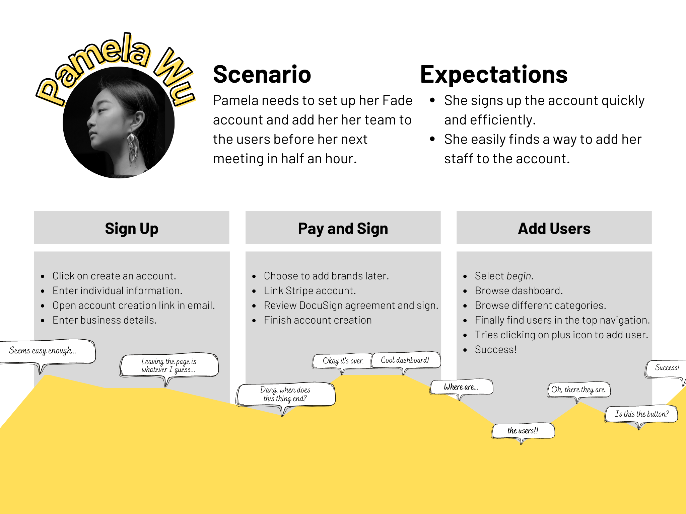
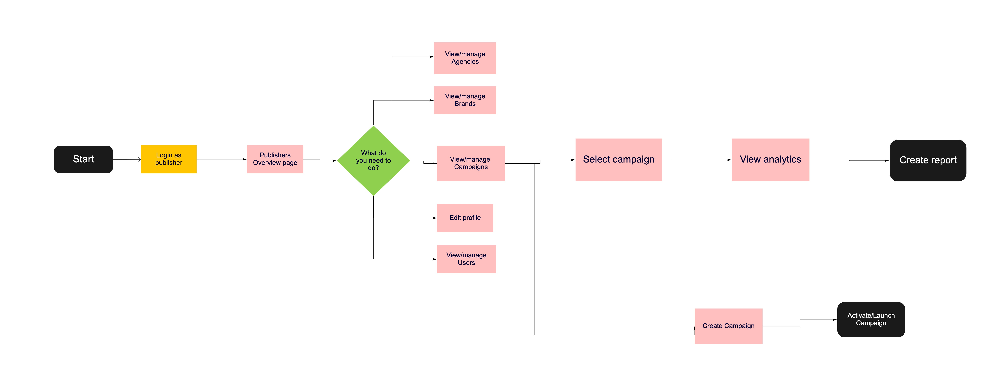

Overview
Fade Technology solutions needs a dashboard solution for its publishers, brand and agencies to manage ad campaigns.
The Team & Timeframe
The project timeframe was 3 week sprint and we worked witha team of three.
- Jaylon Ballard, UX Researcher
- Robert Harris, Information Architect
- Meagan Crowe, Visual Designer
Tools & Methods Used
- Competitive & Comparative Analysis
- Miro
- Figma
- Adobe CC
Problem
Fade Technology Solutions Needs a Dashboard
Fade Technology needs a dashboard for their application so that its publishers, brands, agencies and administrators can manage users and ad campaigns for its clients.
Solution Overview
How might we...?
How might we design a dashboard that allows managment of campaigns, users and assets for Fade Technology Solutions's admins, publishers, agencies and brands? We believe that by creating a centralized hub for clients to manage their accounts, users will be able to check on their statistics efficiently. We believe this because, through market research, we have found the standard for business management dashboards. We will know this is true when clients have a high success rate on tasks needed to be accomplished..
Approach
Begin with the Project Brief
The Fade executives and techs came to us with a detailed project brief, inclding how their system worked for publishers, agencies, brands and admins and examples of Facebook Business Suite and Snapchat's Business dashboard. We did not have access to user info, nor could we interview users since their users are their business clients.
We were forced to rely on the project brief and competitive analysis and comparative analysis to inform our final design decisions.
Activities & Deliverables
Read and Understand the Brief
Fade did part of our Double Diamond work for us and we just needed to build on what they provided and begin sketches and low-fidelity wireframing based on the examples.
Persona
Advanced, Tech Savvy User
The primary user for the platform, and most important, is the Account Adminsitrator. He/she is very tech savvy and will be the go to person for all things platform related. Publishers, users, brands and agencies will be their user base.
Journey Map
Prospective Journey Map
Here we map the journey of the Account Adminsitrator as he/she interacts with the proposed solution.
Research
1. Competitive Analysis
Campaign managment solutions and administrative dashboards are nothing new. Many companies, such as Amazon, YouTube and Facebook alll have those solutions for their business users. We simply looked at those properties and features and applied it to Fades project brief.
Fades business model is an advertiser driven model, like Facebook and Youtube, so we focused heavily on their layout and UI components including analytics. Fade has no direct competitors based on their unique offering.
Observations:
- Dashboards all have analytics and charts and features to maipulate the data.
- There are access and privilege levels assigned to users including who has administrative rights.
- Administrators invite users to the platform.
- Security protocols are put in place to prevent unauthorized access of the platform.
- Campaign management features such as 'Create a Campaign', 'Start/Stop a Campaign'.
2. Comparative Analysis
Fade's Proposition is a Unique Technology
Fades proposition is a unique technology and although there are similarites in the online ad space they do not have a direct competitor. We next looked at Amazon's Seller Central's dashboard. Their business model is not an advertishing based model but there are similarities in their solutions. This was to gather more data on how these solutions are designed, and to get more inspiration.
Design
Dashboards Are Dynamic
Due to the dynamic nature of this platform many site maps were created to show what pages each user would see. Our design had to account for that and the following images will show the maps. Here is the information architecture that we came up with.
Site Maps
User Flows
The Happy Paths
Fades user flow was touched on earlier at the journey map but here is a bit more detail showing how users would navigate on the platform. We focused on the primary flow, which is 'Sign-up' for the platform.
Another flow that the user will take.
Visual Design
Simple and Intuitive Dashboard
A simple and intuitive dashboard with all of the minimal features that Fade needs for its clients. These are the final design that the team and I came up with for Fade's dashboard. Desktop was primary so we did not design a mobile solution
Results & Reflections
Dashboards Are a Challenge
Dashboards are a challenging design to take on with many moving parts. This was in many ways a vey challenging project for our team. We started off with no ability to research the user and had to rely on the project brief for all of our research. In many ways we had to abondone the normal UX steps and just work with what we had.
It turned out that what we had was sufficient and we were able to design by looking at other dashboards and copying their architecture and layout and use Fades business goals and needs provided to us in the project brief.